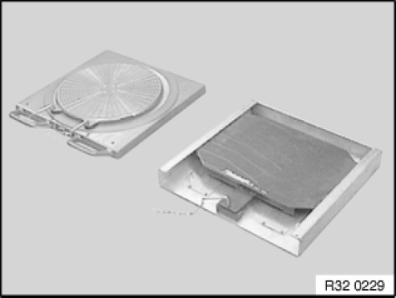
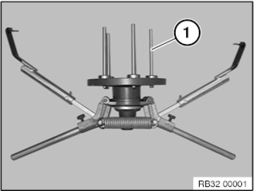
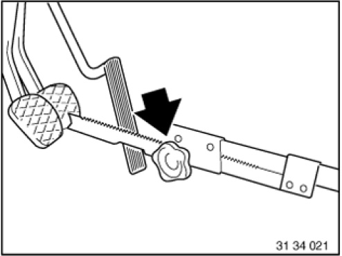

32 00 150 KDS Chassis/Wheel Alignment Check With Vehicle Load Up to Design Position
32 00 150 KDS Chassis/Wheel Alignment Check With Vehicle Load Up To Design Position

IMPORTANT:
Carry out wheel alignment with DIN load only:
- If the technical prerequisites for alignment with ride height input are not fulfilled
- If the vehicle in question is a damaged vehicle

NOTE:
- Read and comply with General information and definitions.
- Read and comply with General chassis definition.
- Update KDS data states
- Check compliance with test conditions, repair vehicle if necessary.

- If necessary, prepare vehicle hoist.
- Drive vehicle onto vehicle hoist.
NOTE:
The front and rear wheels must be positioned centrally on the rotary and sliding plates.
Rotary plates may vary from illustration depending on the manufacturer.

NOTE:
Vehicles with active steering:
Start up active steering prior to wheel alignment.

Attach pickup/ride height marks to vehicle (observe specifications from the various equipment manufacturers).
IMPORTANT:
Use quick-clamping holders with poly control arm bushings only.
Due to excessive measuring inaccuracy, other quick-clamping units are not permitted.
Illustration of KDS II pickup
- Enter customer and vehicle data
- Identify chassis version and select vehicle
- Enter tyre inflation pressure and tread depth
- Move vehicle into design position

- Install brake tensioner.
E81, E82, E84, E87, E88, E90, E91, E92, E93:
IMPORTANT:
Risk of damage.
In order to avoid damaging the front side panel during the "Max. steering angle" drive-in routine, make sure the pickups are removed from the quick-clamping holders/quick-clamping units during output and input alignment. In the process do not detach the connecting cable from the pickups or the rotary plates.
NOTE:
After the drive-in routine, reconnect the pickups to the quick-clamping holders/quick-clamping units, align using the bubble levels and secure in place.
- Remove locking pins from both rotary and sliding plates.
- Perform input measurement in accordance with equipment manufacturer's instructions.
- If necessary, adjust front axle and rear axle.
- Perform output measurement in accordance with equipment manufacturer's instructions.
- Save and print out test record.
- Insert locking pins into both rotary and sliding plates
- Remove wheel alignment system
- If necessary, carry out alignment of ACC sensor
IMPORTANT:
Only on vehicles with Active Cruise Control:
Because the driving axis is the reference for ACC alignment, it is necessary after an alignment of the rear axle, which alters the driving axis, to check the alignment of the ACC sensor as well.
It is not necessary to check the ACC sensor after only one adjustment of the front axle.
Only in event of customer complaint (e.g. poor driving performance):
IMPORTANT: Do not remove screws/bolts (front axle support to engine support or body).
Slacken all screws/bolts (front axle support to engine support or body) and then retighten to specified torque.
Refer to Lowering front axle support.